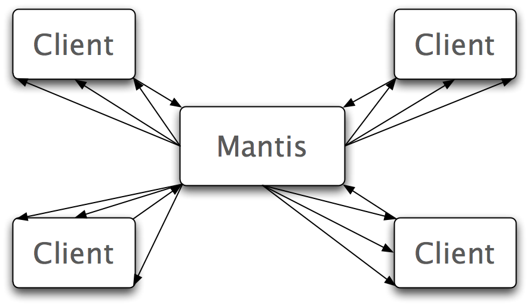

<h1>In The Near Future - Mantis</h1>

<div class="content">
<ul>
    <li>Media server for WebRTC</li>
    <li>Enables scaling
        <ul>
            <li>Targeting to 100 participants in first release</li>
            <li>1 stream up no matter how many viewers</li>
            <li>Great for broadcast and large group chat</li>
        </ul>
</ul>
<div>
    
    
</div>
</div>